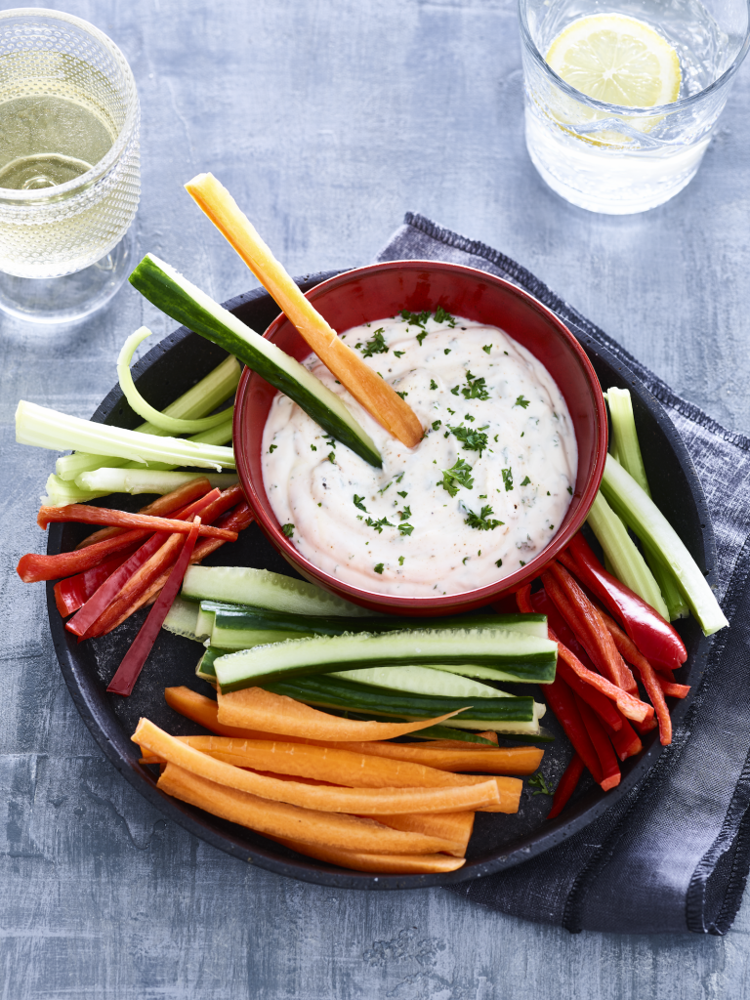

Snelle en smakelijke (groente)dipsaus

Omschrijving
Dipsaus! Met alleen maar gezonde ingrediënten. Op een klein beetje fritessaus na dan. Deze saus is heerlijk om allerlei verschillende groenten in te dippen.
En natuurlijk ook als je jezelf een keer op een schaaltje chips trakteert. Dat moet ook best eens kunnen vind ik.
Ingrediënten (twee personen)
- 60 gr magere yoghurt
- 20 gr fritessaus
- 10 gr chilisaus
- 1 medium augurk
- 5 gr fijngehakte peterselie
- paprikapoeder
- peper/li>
Instructies
- Hak de peterselie fijn en snijd de augurk in hele kleine stukjes.
- Meng alle ingrediënten door elkaar en maak de dip op smaak met paprikapoeder, peper en eventueel wat extra citroensap.